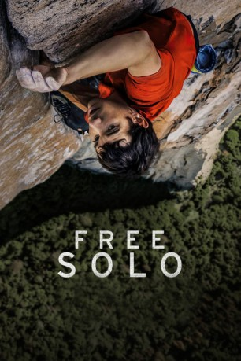

#10881 Free Solo *Englisch*
Auszeichnungen: 1 Oscars gewonnen 1 BAFTA-Awards gewonnen
 
 IMDB-Wertung: 8.3 / 10
IMDB-Wertung: 8.3 / 10  Metascore: 83
Metascore: 83 
In Free Solo bezwingt der Freikletterer Alex Honnold ohne Seil und andere technische Hilfsmittel den bis zu 1000 Meter hohen Granitfelsen El Capitan im Yosemite National Park. Der Film zeigt auch die Vorbereitungen des waghalsigen Unternehmens Der Titel des Films bezieht sich auf Free Solo, die Begehung einer Kletterroute im Alleingang unter Verzicht auf technische Hilfs- und Sicherungsmittel.
nur Englisch
Jahr: 2018
Dauer: 100 Minuten
FSK:
Land: USA Studio: National Geographic Documentary FilmsTonspuren:
Untertitel: Englisch, ,
Auflösung: 1080p (1920x1038) Größe: 11468 MB
Genre: Dokumentation, Sport
Regisseur: Jimmy Chin, Elizabeth Chai Vasarhelyi
Drehbuch:
Soundtrack: Marco Beltrami
Darsteller:
- Alex Honnold als Himself
- Jimmy Chin als Himself
- Tommy Caldwell als Himself
- Cheyne Lempe als Himself
- Mikey Schaefer als Himself
- Sanni McCandless als Herself
- Dierdre Wolownick als Herself
- Peter Croft als Himself
- Mark Synnott als Himself - Climbing Journalist
Datei: X:\Dokumentationen\Sport\Free Solo Englisch (2018, FSK, 1920x1038).mkv seit 03.04.2019
Festplatte: HD Serien(SU-Z)+Dokus+Musik
 Es gibt insgesamt 34 Filme in der Gruppe 'Dokumentationen\Sport'
Es gibt insgesamt 34 Filme in der Gruppe 'Dokumentationen\Sport'